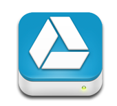

| Discover a better way of working with Google, saving your company the time, money and hassles of managing these IT solutions yourself. Google Apps is a cloud-based productivity suite that helps you and your team connect and get work done from anywhere on any device. It's simple to setup, use and manage, allowing you to work smarter and focus on what really matters. |
Elevate your Professional Brand
Know what your email address says about you. Using a custom domain that is consistent with your brand as a real estate professional is crucial. Google mail allows you to create a custom email address that represents you and your business.
Email wherever you work
Gmail works on any computer or mobile device with a data connection and offline support lets you keep working even when you're disconnected. Whether you're at your desk, in a meeting, or on a plane, your email is there.
Work fast, save time
Gmail is designed to make you more productive. 25GB of storage means you never have to delete anything, powerful search lets you find everything, and labels and filters help you stay organized.
Connect with people
Your inbox isn't just about messages, it's about people too. Text, voice, and video chat lets you see who's online and connect instantly. See your contacts' profile photos, recent updates and shared docs next to each email.
Stay organized and on schedule
Organize your day with Calendar and get event reminders on your phone or in your inbox. Attach files or docs to your event so you have the right materials when your meeting starts.
Find time with your colleagues or clients
Calendar sharing makes it easy to find time with the people you work with and the smart scheduling feature suggests meeting times that work for everyone.
Publish calendars to the web
Create an event calendar and embed it on your website or set up appointment slots so clients can choose the best time for them.
REALTOR® Listing and Transaction Calendars
Pre-built calendar templates by SDAR for your real-estate needs. Easily manage all your listings and transactions with California state specific calendars that include pre-filled dates and reminders related to each new business opportunity you enter.
Google Voice gives you one number for all your phones, a phone number that is tied to you, not to a device or a location. Use Google Voice to simplify the way you use phones, make using voicemail as easy as email, customize your callers' experience, and more.
Google Voice isn't a phone service, but it lets you manage all of your phones.Google Voice works with mobile phones, desk phones, work phones, and VoIP lines. There's nothing to download, upload, or install, and you don't have to make or take calls using a computer.
Google Voice will let you define which phones ring, based on who's calling, and even let you ListenInTM on voicemail before answering the call. We use smart technology to route your calls. So, if you're already on a Google Voice call, we'll recognize it and use call waiting to reach you on the phone you're on.
Google Drive gives you instant access to Google Docs, a suite of editing tools that makes working together better—even when your colleagues or clients are miles away.
Access everywhere
Google Drive is everywhere you are—on the web, in your home, at the office and on the go. So wherever you are, your stuff is just...there. Ready to go, ready to share. Store your files in a safe place.
Things happen
Your phone goes for a swim. Your laptop takes an infinite snooze. No matter what happens to your devices, your files are safely stored in Google Drive.
Go beyond storage- Collaborate
Google Drive lets you do more than just store your files. Share files with exactly who you want and edit them together, from any device.